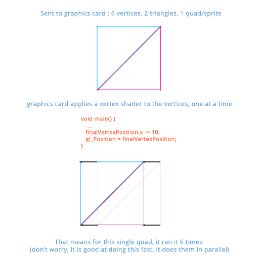
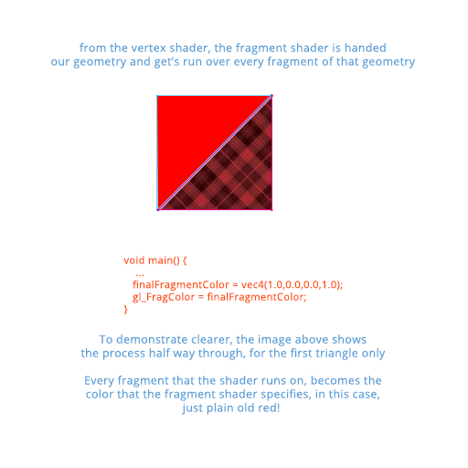

Back to feature guide
View all guides
Shaders in luxe
Mouse x axis controls the distortion in the distort shader.
Mouse x axis controls the hue degrees in the Hue change shader.
Level background has a severe tilt shift shader that also desaturates the image.
Click to run example
Wait, what are shaders exactly?
When you draw something on screen, it is generally submitted as some geometry.
That is, a set of vertices describing the geometry, is sent to the graphics card for rendering. A sprite, is a “quad”, and generally is sent as two triangles.
When you send geometry to the graphics card to be drawn, you can specify custom shaders to use that will be applied to the geometry.
There are two kinds of shaders to understand for now - don’t worry, they always seem more complex than they are but in practice they are quite logical.
The vertex shader
As mentioned, there are vertices sent to draw a sprite. Two triangles, usually, and a triangle has 3 vertices. That means, for a quad or rectangle like a sprite, there are 6 vertices sent to the graphics card.
When these 6 vertices reach the rendering pipeline, there is a small program (a shader) that runs on each and every vertex.
That program only cares about one thing really : the final position that the vertex will end up. Let’s visualise this below :

The fragment shader
After that, it sends the shader to be “rasterized”, that means converted into pixels so it can be drawn on the screen.
When doing this, the rasterized geometry, i.e the pixels, are then given to the “fragment” shader. These are also commonly referred to as pixel shaders, because they apply to the rasterized pixels (fragments!) that are being submitted to the screen drawing buffer.
The fragment shader, much like the vertex shader, is run on every single fragment. Again, it is good at doing this really quickly, but this is important to understand that a single line of code in a shader can cause drastic performance hits due to the sheer number of times the code will be run! See the note at the end of this section for some interesting numbers.
The fragment shader only cares about what the resulting color of the fragment becomes. It will also interpolate (blend) from each vertex, based on it’s location between them. Let’s visualize this below :

note on numbers
A game renderered at 1080p, a resolution of 1920x1080 pixels, would be 1920 x 1080 = 2,073,600 pixels. That is per frame - usually games run at 30 or 60 frames per second. That means (1920 x 1080) x 60 for one second of time, that’s a total of 124,416,000 pixels, per second. For a single frame buffer, usually games have multiple buffers as well.
Endless possibilities
Because of the nature of shaders being so versatile, there are many many things that you can do with them. From complex 3D lighting algorithms down to simple image distortion or coloring (like in the live demo), you can do a huge range of things with the rendering pipeline.
Using shaders in luxe
luxe makes using shaders a bit easier by wrapping up the details and giving you the ability to load and apply shaders to your sprites and geometry easily. It also makes it easy to send information into the shaders, because that is important to make great custom shaders. These values for a pixel shader are called “uniforms”, and are set from the shader object you create.
Take a look at the code from the demo, and you should be able to follow along as to what is happening.
//we create a variable to hold the shader
var hue_shader : Shader;
//and then we load the shader code, and we leave the vertex parameter blank, to use the default shader!
hue_shader = Luxe.loadShader('assets/huechange.glsl');
//then we tell the sprite to use this shader when rendering
hue_sprite.shader = hue_shader;
And finally, when we move the mouse, we send some information to the shader to change the color
public function onmousemove( e:MouseEvent ) {
var percent = e.pos.x / Luxe.screen.w;
var hue = (Math.PI*2) * percent;
//hue based on mouse x
hue_shader.set_uniform_float('in_hue', hue);
}
Code from the live demo
distort.glsl
uniform sampler2D tex0;
uniform sampler2D tex1;
varying vec2 tcoord;
varying vec4 color;
uniform float distortamount;
void main() {
vec4 direction = texture2D(tex1, tcoord);
vec4 c = texture2D(tex0, tcoord + distortamount * (direction.rg - vec2(0.5, 0.5)));
gl_FragColor = c;
}
full code from sample
import luxe.Input;
import luxe.Sprite;
import luxe.Vector;
import luxe.Color;
import phoenix.Shader;
class Main extends luxe.Game {
var distort_sprite : Sprite;
var hue_sprite : Sprite;
var level_sprite : Sprite;
var level_tiltshift : Shader;
var hue_shader : Shader;
var distort_shader : Shader;
var loaded : Bool = false;
var loaded_logo : Bool = false;
public function ready() {
var luxe_tex = Luxe.loadTexture('assets/luxe.png');
var level_texture = Luxe.loadTexture('assets/level.png');
level_texture.filter = phoenix.Texture.FilterType.nearest;
var distort_map = Luxe.loadTexture('assets/distort.png');
var _size = Luxe.screen.h * 0.8;
if(_size > 512) _size = 512;
distort_sprite = new Sprite({
texture : luxe_tex,
pos : new Vector(_size/2,_size),
size : new Vector(_size,_size)
});
hue_sprite = new Sprite({
texture : luxe_tex,
pos : new Vector(_size+(_size*0.05),_size),
size : new Vector(_size,_size)
});
level_sprite = new Sprite({
texture : level_texture,
pos : new Vector(Luxe.screen.w/2,Luxe.screen.h/2)
});
//for the logo blocks image
luxe_tex.onload = function(tt) {
distort_sprite.scale = new Vector(0.5,0.5);
hue_sprite.scale = new Vector(0.5,0.5);
hue_shader = Luxe.loadShader('assets/huechange.glsl');
hue_sprite.shader = hue_shader;
loaded_logo = true;
} //luxe_tex on load
level_texture.onload = function(tt) {
level_sprite.scale = new Vector(Luxe.screen.w/240,Luxe.screen.h/160);
// #if !mobile
level_tiltshift = Luxe.loadShader('assets/gray_tilt_shift.glsl');
level_sprite.shader = level_tiltshift;
// #end
} //level tex on load
distort_map.onload = function(tt) {
distort_shader = Luxe.loadShader('assets/distort.glsl');
distort_sprite.shader = distort_shader;
//move to second slot
distort_map.slot = 1;
//set the uniform
distort_shader.set_uniform_texture('tex1', distort_map);
loaded = true;
}
} //ready
public function ontouchmove( e:TouchEvent ) {
if(loaded && loaded_logo) {
var percent = e.x / Luxe.screen.w;
var hue = (Math.PI*2) * percent;
//distort based on mouse x
distort_shader.set_uniform_float('distortamount', percent);
//hue based on mouse x
hue_shader.set_uniform_float('in_hue', hue);
}
}
public function onmousemove( e:MouseEvent ) {
if(loaded && loaded_logo) {
var percent = e.pos.x / Luxe.screen.w;
var hue = (Math.PI*2) * percent;
//distort based on mouse x
distort_shader.set_uniform_float('distortamount', percent);
//hue based on mouse x
hue_shader.set_uniform_float('in_hue', hue);
}
}
public function onkeyup( e:KeyEvent ) {
if(e.key == KeyValue.escape) {
Luxe.shutdown();
}
} //onkeyup
} //Main
Back to feature guide
View all guides